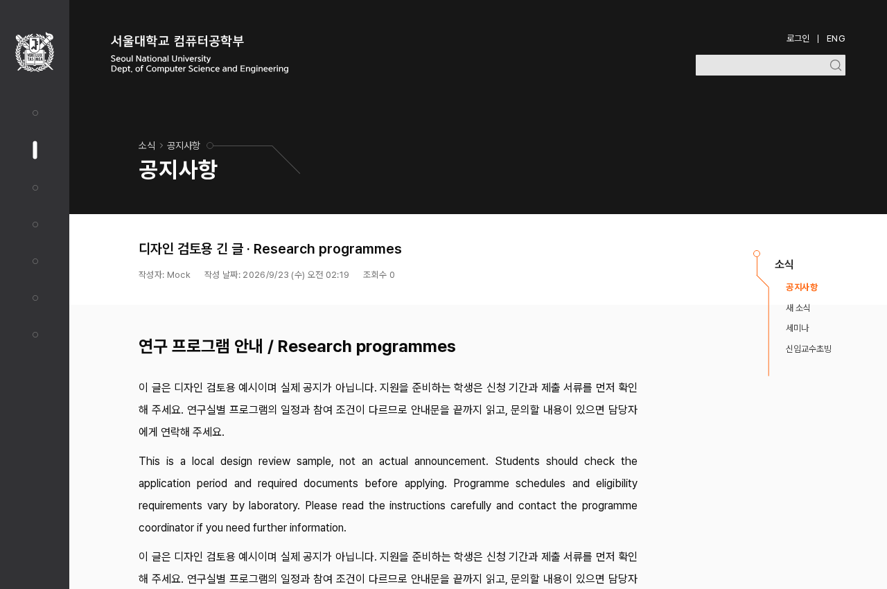

글 제목과 보조 정보의 위계
본문 DS-015 적용 완료 · 제목은 비교 중, 앱 미적용먼저, 이번에 적용한 DS
지원자는 신청 기간과 제출 서류를 먼저 확인해 주세요.
Read the application requirements before submitting the form.
Pretendard Variable · 16px / 400 / 줄높이 32px
왜 제목을 다음으로 보는가
현재 문제: 공지·새 소식·세미나의 글 제목은 20px/600이다. 공지 본문 안 기본 소제목은 이제 24px/700이므로 글 전체의 제목이 더 작고 덜 굵게 보일 수 있다.
변경 이유: 글 고유 제목을 24px/700으로 맞춰 기본 소제목보다 작지 않게 하고 글의 시작을 뚜렷하게 한다. 기존 24px·700 값을 재사용한다.
기대 효과와 비용: 제목의 강조가 강해지는 대신 제목 영역이 높아지고 긴 제목의 줄바꿈이 늘 수 있다. 이번 모바일 긴 제목은 두 안 모두 2줄이며 높이가 56→67.2px로 늘었다.
특정 크기나 굵기를 접근성 필수값으로 제시하는 것이 아니다. 기존 20px/600의 절제된 인상이 더 중요하면 A를 유지할 수 있다. 작성자가 임의로 더 큰 제목을 넣은 모든 본문보다 항상 크게 만드는 규칙도 아니다.
01. 제목은 강조하고, 날짜·조회수는 작게 유지
A · 현재
학사 일정과 연구 프로그램
B · 추천
학사 일정과 연구 프로그램
공지·새 소식의 작성자·날짜·조회수는 두 안 모두 기존 13px/400, #737373이다. 읽는 본문을 키웠다는 이유로 모든 짧은 정보까지 함께 키우지 않는다.
| 역할 | 기준 | 상태 |
|---|---|---|
| 어두운 상단의 페이지 구분 이름 | 데스크톱 32 / 모바일 24px | 현재 값 유지. 전체 페이지 규칙은 후속 |
| 글 고유 제목 | 24px / 700 / 줄높이 1.4 | B 제안 · 공지·새 소식·세미나 |
| 읽는 본문 | 16px / 400 / 줄높이 2 | DS-015 · 공지 적용 완료 |
| 작성자·날짜·조회수 | 13px / 400 / 줄높이 1.2 | 공지·새 소식의 기존 값 유지 제안 |
02. 실제 화면 비교

{kind=link}
고유 제목의 크기·굵기만 바꿨다. 본문의 크기·높이와 제목의 폭·문구·색은 동일하다. 제목 높이만큼 뒤의 내용이 내려간다.
03. 이번 범위
공지·새 소식·세미나 상세 3곳의 글 고유 제목을 맞추고, 공지·새 소식의 기존 보조 정보 크기를 기준으로 삼는 안이다. 목록 행 제목, 일반 섹션 제목, 메뉴·폼·에디터는 별도 검토한다.
기존 간격·문구·줄높이 비율은 유지한다. 모바일의 작성자·날짜 줄바꿈은 배치 단계에서 다룬다. 근거·출처·적용 범위.
이번 판단 · T-Q3
B처럼 글 제목을 24px/700으로 맞추고, 보조 정보는 기존 13px/400을 유지할까?
A는 현재 제목 20px/600 유지다. 본문 16px/32px 결정과 보조 정보의 모습은 두 안에서 같다. 추천은 B다.